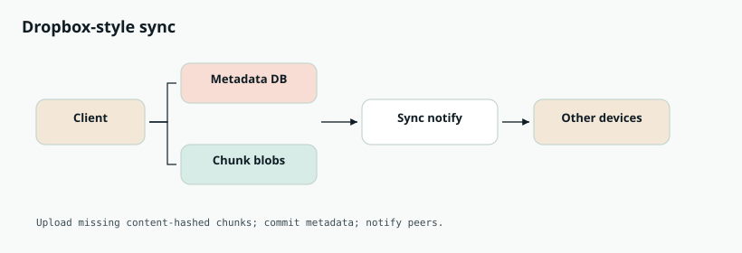
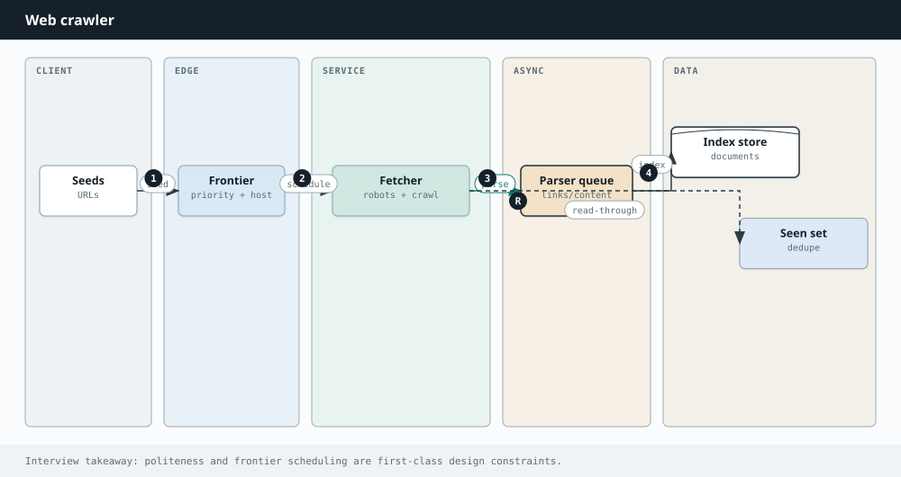
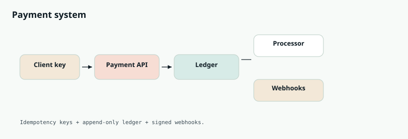
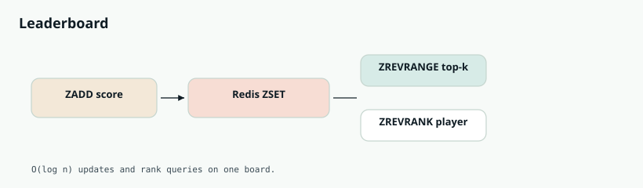
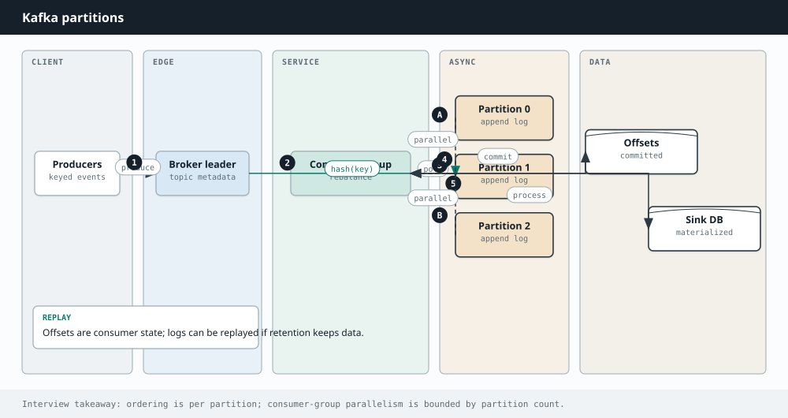

Interview Lab · System Design
System design interview questions
Eighteen L4–L6 prompts with why-asked, level expectations, whiteboard steps, and real company examples.
This lab is for L4–L6 system design loops — prompts repeatedly reported at Meta, Google, Amazon, Netflix, Stripe, and Uber in 2025–2026 (URL shortener warmups through Dropbox, payments, crawlers, and Kafka-style queues).
How to use it: Practice a 45-minute structure every time — clarify → capacity sketch → API → diagram → data model → deep dives → failures. Open a card, study it, then redraw from memory on a blank page.

Related chapters: Approaching SD, Scaling, Caching, URL shortener, WhatsApp, Instagram, Uber.
- Q1 URL shortener
- Q2 Instagram / news feed
- Q3 WhatsApp / chat
- Q4 Rate limiter
- Q5 Uber / ride sharing
- Q6 YouTube / video
- Q7 Notification system
- Q8 Search autocomplete
- Q9 Distributed cache
- Q10 Ticketmaster / booking
- Q11 Dropbox / Drive
- Q12 Web crawler
- Q13 Payment system
- Q14 Leaderboard
- Q15 Distributed KV store
- Q16 Message queue (Kafka-like)
- Q17 Pastebin
- Q18 Google Maps basics
Q1. Design a URL Shortener (Bitly)
Design a service like bit.ly: users submit a long URL and get a short link; opening the short link redirects to the original. Expect ~100M new URLs/month and a much higher read:write ratio. Walk a full 45-minute design.
Perfect first SD question: read-heavy KV, ID generation, caching.
- Clarify + capacity
- ID scheme
- Read vs write path
- Analytics async
| Level | Expectation |
|---|---|
| Junior | Basic API + DB + redirect |
| Mid | Cache + base62 + 302 vs 301 |
| Senior | Multi-region + abuse |
| Staff | Global edge + consistency story |
| Principal | Platform constraints / multi-tenant shorteners |
- Custom aliases? Expiry? Auth?
- Analytics (click counts) required?
- Latency: redirect p99 < 100ms?
- Availability target (e.g. 99.9%)?
- Assume ~7-char base62 codes unless they specify otherwise.
- API:
POST /shorten {url, alias?}→ code;GET /{code}→ 302 Location: long URL. - Capacity: 100M/mo ≈ 40 writes/s avg; reads can be thousands/s — cache is mandatory. Storage: 100M × ~500B ≈ 50GB+/yr metadata (order-of-magnitude OK).
- ID generation (pick one & defend): (1) distributed counter + base62; (2) hash URL + collision handling; (3) pre-generated key pool for bursts.
- Data model: code → {long_url, user_id, created, expires, clicks?}. KV/NoSQL or sharded SQL by code hash.
- Read path: edge/CDN optional → LB → app → Redis → DB. Prefer 302 (mapping can change; analytics stay server-side) unless they insist on 301.
- Analytics: async click events to Kafka/queue — never block redirect.
- Abuse: rate-limit shorten; malware URL scan offline.
- Hot keys: viral links — cache replicas / local caches.
- Enumeration: avoid raw sequential public IDs; salt / skip / encrypt.
- Multi-region: replicate read-only mappings; write to primary with async replication.
- Custom aliases: conditional put; reject if taken.
- Custom aliases?
- Enumerate IDs?
- Global latency?
- bit.ly / t.co style redirects
- Amazon product short links
- Firebase Dynamic Links patterns
Q2. Design Instagram / News Feed
Design a photo-sharing social network: follow users, upload photos, see a home feed of posts from people you follow (roughly reverse-chronological with light ranking).
Tests fan-out tradeoffs — Meta’s signature problem.
- Celebrity problem
- Hybrid fan-out
- Media CDN
- Eventual consistency
| Level | Expectation |
|---|---|
| Junior | Chronological pull |
| Mid | Push fan-out |
| Senior | Hybrid + ranking stage |
| Staff | ML ranker + diversity |
| Principal | Feed platform multi-surface |
- Scale: hundreds of millions of users?
- Celebrity / mega-follower problem in scope?
- Stories? Likes counters? Ranking ML?
- Consistency: eventual feed OK?

- Write media: pre-signed upload → object store + CDN; metadata row (post_id, author, caption, media_url, ts).
- Fan-out on write: push post_id into each follower's timeline cache (Redis lists) — great for normal users.
- Fan-out on read / pull: for celebrities, do not push to tens of millions of timelines; merge recent posts at read time.
- Hybrid: write-fanout for normals, pull for celebs (or inactive users).
- Read path: auth → timeline cache → hydrate posts → CDN URLs.
- Ranking: start chronological; add retrieval + re-rank stage later.
- Sharding: user_id for timelines; post_id for posts.
- Counters (likes/views): sharded in-memory with periodic flush; approximate display OK.
- Notifications / stories: separate services + queues.
- Feed can be eventually consistent; durable post metadata is enough for ACK.
- Stories?
- Live counters?
- Unfollow consistency?
- Instagram/FB feed
- LinkedIn feed fanout
- Twitter/X home timeline
Q3. Design WhatsApp / Chat
Design 1:1 and group messaging with delivery receipts, online presence, and media sharing. Focus on low latency and reliability.
Realtime systems, durability, fan-out — Meta/Slack loops.
- WS/sticky
- Persist before ACK
- Group strategy
- Presence
| Level | Expectation |
|---|---|
| Junior | 1:1 WS + DB |
| Mid | Offline store-and-forward |
| Senior | Large groups + E2E talk |
| Staff | Multi-device sync |
| Principal | Global chat fabric |
- E2E encryption in scope?
- Max group size?
- Multi-device sync?
- Message history retention?

- Connections: sticky WebSocket/MQTT to chat servers; presence map user→server in Redis.
- Send path: client → chat server → durable queue/log (Kafka) → fan-out to recipient inboxes → push to online sockets or store-and-forward if offline.
- ACK: persist before ACK to sender (at-least-once); clients de-dupe by message_id.
- Ordering: per-conversation monotonic sequence from a single partition/writer.
- Groups: small → fan-out to members; large → group log + members catch up / notify online only.
- Media: upload to blob store; message carries URL/thumbnail.
- Presence: heartbeats with short TTL.
- Receipts: separate lightweight events; do not block delivery.
- E2E encryption?
- Read receipts scale?
- Message edit/delete?
- Slack channels
- Discord large guilds patterns
Q4. Design a Rate Limiter
Design a distributed rate limiter for an API gateway: e.g. 100 requests per user per minute, consistent across many gateway instances.
Building block that appears inside every API design.
- Algorithm choice
- Atomic Redis
- Fail open/closed
- Dimensions
| Level | Expectation |
|---|---|
| Junior | Fixed window |
| Mid | Token bucket + Redis |
| Senior | Multi-region approx |
| Staff | Adaptive limits |
| Principal | Mesh-wide policy engine |
- Token bucket: refill rate r; burst capacity — industry default.
- Leaky bucket: smooth constant outflow.
- Fixed window: simple counters; edge burst problem.
- Sliding window log/counter: fairer, more cost.

- Gateways call a shared store (Redis) before forwarding.
- Use atomic ops (INCR+EXPIRE or Lua) for token bucket — avoid races.
- On deny: HTTP 429 + Retry-After.
- Dimensions: per API key / IP / endpoint / tenant.
- Multi-region: regional limiters + global budget, or accept approximate limits.
- Redis down: product call — fail open vs fail closed.
# token bucket keys: tokens={key}, ts={key}
# atomic Lua: refill based on elapsed time, consume 1 if tokens>=1
# else return limited
- Per-user vs per-IP?
- Burst vs smooth?
- Redis down?
- AWS API Gateway
- Cloudflare rate limiting
- Stripe API limits
Q5. Design Uber / Ride Sharing
Design ride-hailing: riders request trips, nearby drivers are matched, locations update in realtime, pricing/ETA computed.
Geo + matching + state machines — Uber/Lyft signature.
- Geo index
- Double-dispatch
- Trip FSM
- City sharding
| Level | Expectation |
|---|---|
| Junior | Basic nearby query |
| Mid | Ring matching + ETA |
| Senior | Surge + CAS claim |
| Staff | Multi-product dispatch |
| Principal | Marketplace optimization |
- Cities / regions in scope?
- ETA accuracy expectations?
- Surge pricing?
- Driver app battery / update frequency?

- Location stream: drivers send GPS every few seconds → update geo index (geohash / S2 cells in Redis or specialized store).
- Request: rider → query nearby cells → filter status/vehicle → rank by ETA/rating → offer with timeout → expand ring on miss.
- Double dispatch: atomic claim / CAS on driver status with lease; only one rider wins.
- Trip lifecycle: requested → matched → enroute → ongoing → completed (state machine + events to billing/notify).
- ETA: map-match + traffic-aware routing service; cache segments.
- Surge: demand/supply per cell, smoothed (EMA), capped rate of change.
- Scale: shard by city/region — traffic is local.
- Surge?
- ETA accuracy?
- Airport queues?
- Uber/Lyft dispatch
- DoorDash courier matching
- Gojek regional stacks
Q6. Design YouTube / Video Streaming
Design video upload and streaming: users upload; millions watch with adaptive quality worldwide.
Pipeline + CDN — Google/Netflix media systems.
- Async transcode
- ABR
- CDN hot path
- Cost/tiering
| Level | Expectation |
|---|---|
| Junior | Upload + single bitrate |
| Mid | Ladder + CDN |
| Senior | Live vs VOD |
| Staff | Global POP ingest |
| Principal | Encoding marketplace |

- Upload: pre-signed URL → direct to object store; metadata = processing.
- Pipeline: queue workers transcode many resolutions/codecs, thumbs, duration → HLS/DASH segments → mark ready. Fast-start low-res first.
- Playback: client fetches manifest; CDN serves segments; origin is object store; ABR by bandwidth.
- Hot titles: heavy edge caching; short TTL for live.
- Live: separate ingest POPs → packager → CDN; not the VOD path.
- Cost: lifecycle to cold storage; fewer bitrates for rarely watched; copyright fingerprinting async.
- Recs: offline ML + online re-rank — off the play path.
- Viral cold cache?
- DRM?
- Thumbnails A/B?
- YouTube
- Netflix encoding + Open Connect
- Twitch live ladder
Q7. Design a Notification System
Design multi-channel notifications: push, email, SMS, in-app — with preferences, retries, and high throughput.
Async fan-out with preferences — almost every company.
- Channels
- Prefs
- Retries/DLQ
- Idempotency
| Level | Expectation |
|---|---|
| Junior | Single channel worker |
| Mid | Multi-channel + prefs |
| Senior | Priority + chunking |
| Staff | Global quiet hours/compliance |
| Principal | Notification platform |

- Producers enqueue jobs (do not block product writes).
- Preferences/quiet-hours gate before send.
- Kafka topics by priority/channel → workers render templates → provider adapters (APNs/FCM, SES, Twilio).
- Idempotency keys; rate-limit per user and per provider.
- Retries with exponential backoff → DLQ for poison messages.
- Large audiences: chunked fan-out tasks.
- Aim at-least-once + idempotent display — not exactly-once fantasy.
- Exactly-once?
- Celebrity fan-out?
- Digest bundling?
- Amazon SES+SNS
- Uber notifications
- LinkedIn notification service
Q8. Design Typeahead / Search Autocomplete
Design search autocomplete that returns top suggestions as the user types, with low latency and some trending awareness.
Prefix systems + offline top-k — Google classic.
- Trie/top-k
- Offline vs online
- Edge cache
- Personalization light touch
| Level | Expectation |
|---|---|
| Junior | In-memory trie |
| Mid | Snapshots + CDN |
| Senior | Trending re-rank |
| Staff | Personalization + spell |
| Principal | Multi-locale platform |

- Offline: aggregate query logs → top-k per prefix → build trie/prefix index → ship snapshots to servers/edge.
- Online: client debounces; request prefix → memory trie returns top-k (<50ms); light personalization/trending re-rank.
- Cache popular prefixes at CDN/edge.
- Limit prefix length; store only top-k not full postings.
- Shard trie by first character(s) if needed.
- Refresh index on minutes cadence — not per keystroke.
- Personalization?
- Typo tolerance?
- Abuse?
- Google Suggest
- Amazon search box
- Twitter typeahead
Q9. Design a Distributed Cache
Design a distributed in-memory cache: get/put/delete, TTL, HA, horizontal scale.
Distributed systems fundamentals — Amazon/Microsoft.
- Consistent hashing
- Replication
- Stampede
- CAP for cache
| Level | Expectation |
|---|---|
| Junior | Single Redis |
| Mid | Shard + replica |
| Senior | Hot keys + soft TTL |
| Staff | Multi-region cache |
| Principal | Cache platform SLOs |

- Client or proxy uses consistent hashing → shard.
- Each shard: primary + replicas (async or semi-sync).
- Eviction: LRU/LFU + TTL per node.
- Membership via gossip/config service; virtual nodes for balance.
- Hot keys: replicate popular keys; local caches.
- Stampede: soft TTL + singleflight / probabilistic early expire.
- Write strategies: invalidate-on-write common; write-through / behind when justified.
- CAP: prefer AP for cache; miss → load DB.
- Persistence optional — usually ephemeral by design.
- Write-through vs invalidate?
- Persistence?
- ElastiCache/Memorystore
- Netflix EVCache
- Facebook Memcached fleet
Q10. Design Ticketmaster / Event Booking
Design ticketing for concerts: browse events, hold seats, pay, issue tickets — without double-selling under spikes.
Strong consistency under flash sales — inventory correctness.
- Holds/TTL
- CAS
- Idempotent pay
- Waiting room
| Level | Expectation |
|---|---|
| Junior | Row lock booking |
| Mid | Hold+pay saga |
| Senior | Event shard + queue |
| Staff | Global onsale fabric |
| Principal | Marketplace inventory mesh |

- Browse: read replicas + CDN for event pages; seat maps cached carefully.
- Inventory states: available → held → sold.
- Hold: soft lock with short TTL (2–10 min) via Redis or conditional row update.
- Checkout: create hold → payment intent → on success commit seats + ticket IDs; on fail/expiry release hold.
- Idempotency: keys on payment webhooks — no double charge / double sell.
- Consistency: strong on inventory (CAS /
UPDATE … WHERE status='available'). - Scale: shard by event_id; waiting rooms / queues for mega on-sales.
- Overbooking airlines?
- Seat maps cache?
- Ticketmaster
- Amazon Lightning Deals inventory
- Airline PSS holds
Q11. Design Dropbox / Google Drive
Design a cloud file storage and sync service: upload/download files, sync across devices, share folders, and handle large files efficiently.
Metadata vs blob + sync protocol — Dropbox/Drive interviews.
- Chunking/dedupe
- Conflict handling
- Notify devices
| Level | Expectation |
|---|---|
| Junior | Upload whole file |
| Mid | Chunked hash sync |
| Senior | Conflicts + sharing ACL |
| Staff | Block-level sync |
| Principal | Collab editing add-on |
- Max file size? Concurrent editors?
- Version history? Offline sync?
- Sharing ACLs / links?

- Split metadata and bytes: metadata DB (file_id, path, versions, ACL); blobs in object storage.
- Chunk files (e.g. 4MB); content-hash chunks for dedupe; upload only missing chunks.
- Sync protocol: client keeps local revision; pull delta since last sync; conflict → last-write-wins or branch versions.
- Notifications: long-poll / websocket for file-change events to other devices.
- Large uploads: multipart / resumable; commit metadata only when all chunks ACK'd.
- Sharing: ACL on folder nodes; link tokens with expiry.
- Namespace tree sharding by owner_id.
- CDC from metadata → search index.
- Client block-level sync (rsync-like) for huge files.
- Simultaneous edits?
- Very large files?
- Dropbox
- Google Drive
- OneDrive
Q12. Design a Web Crawler
Design a distributed web crawler that discovers and fetches pages at large scale while respecting robots.txt and politeness limits.
Distributed scheduling + politeness — Google classic.
- Frontier
- Dedupe
- Per-host limits
- Budget/priority
| Level | Expectation |
|---|---|
| Junior | Single crawler |
| Mid | Distributed frontier |
| Senior | Freshness/recrawl |
| Staff | JS rendering farm |
| Principal | Web-scale crawl platform |

- URL frontier: prioritized queue of URLs to fetch (BFS / priority by PageRank estimate).
- Dedupe: seen URL set (Bloom + store); canonicalize URLs.
- Politeness: per-host rate limits; respect robots.txt (cache rules).
- Workers: fetch → extract links → enqueue new URLs; store raw HTML / parse text.
- Distributed: shard frontier by host hash so one host stays on one worker (politeness).
- Failure: retries, crawl budget, blacklist bad hosts.
- JavaScript-heavy pages?
- Change rates?
- Googlebot
- Amazon product crawlers
- Bing crawler
Q13. Design a Payment System
Design a payment service that charges cards, handles retries safely, supports refunds, and keeps an accurate ledger under failures.
Money systems — Stripe/Amazon bar for correctness.
- Idempotency
- Ledger
- Webhooks
- PCI boundary
| Level | Expectation |
|---|---|
| Junior | Charge API + DB flag |
| Mid | Idempotent intents + ledger |
| Senior | Saga/outbox |
| Staff | Multi-rail orchestration |
| Principal | Global payments platform |

- Idempotency keys on every charge from the client — retries must not double-charge.
- API: create PaymentIntent → confirm → capture (or auth+capture).
- Ledger: append-only double-entry journal; balances derived — never overwrite money rows.
- Provider calls: stripe/processor behind adapter; store provider refs; reconcile webhooks with signature verify.
- Distributed tx: transactional outbox or saga for order ↔ payment; compensating refunds on failure.
- PCI: never store raw PAN; use tokens; isolate network.
- Partial capture?
- Chargebacks?
- Multi-currency?
- Stripe
- PayPal
- Amazon Payments
Q14. Design a Leaderboard
Design a game leaderboard that supports updating a player's score and fetching top-K and a player's rank with low latency.
Realtime ranking primitives — games + social.
- ZSET ops
- Shard strategy
- Ties
| Level | Expectation |
|---|---|
| Junior | One Redis ZSET |
| Mid | Season snapshots |
| Senior | Sharded boards |
| Staff | Approx global top-k |
| Principal | Tournament platform |

- Redis ZSET (score → member) for one board: ZADD update, ZREVRANGE top-K, ZREVRANK for rank — O(log n).
- Scale: shard by competition/season; or by player hash with aggregation for global top-K (harder).
- Ties: use score + timestamp composite.
- Historical boards: snapshot immutable ZSET per season.
- Fan-out reads with cache; writes go to primary.
- Historical seasons?
- Friends-only board?
- Game leaderboards
- Duolingo leagues
- Amazon bestseller ranks
Q15. Design a Distributed Key-Value Store
Design a Dynamo-style distributed key-value store with put/get, high availability, and horizontal scale.
Dynamo paper literacy — Amazon/Google distributed DB.
- Hash ring
- Quorum R/W
- Conflict versions
- Anti-entropy
| Level | Expectation |
|---|---|
| Junior | Replicated KV |
| Mid | Tunable quorum |
| Senior | Vector clocks |
| Staff | Multi-datacenter |
| Principal | Storage engine internals |
- Consistent hashing ring + virtual nodes for partition.
- N replicas on successor nodes; client or coordinator uses quorum R/W (e.g. N=3, R=2, W=2).
- Versioning: vector clocks / version numbers; reconcile conflicts (last-write-wins or client merge).
- Hinted handoff + anti-entropy (Merkle trees) for temporary failures.
- Tunable consistency: CAP — prefer AP with eventual consistency for shopping-cart style.
Different from a cache: durability, replication, conflict resolution, and anti-entropy are first-class.
- Why not Paxos always?
- Sloppy quorum?
- Amazon DynamoDB lineage
- Cassandra
- Riak
Q16. Design a Distributed Message Queue (Kafka-like)
Design a pub/sub log that supports high-throughput producers, consumer groups, and durable retention.
Log-based messaging — LinkedIn/Uber data infra.
- Partitions/order
- Consumer groups
- Retention
- ISR acks
| Level | Expectation |
|---|---|
| Junior | Single topic queue |
| Mid | Partitions + groups |
| Senior | Exactly-once talk |
| Staff | Multi-cluster mirror |
| Principal | Streaming platform |
- Topics split into partitions (ordered append logs).
- Producers pick partition by key (ordering per key) or round-robin.
- Replicas: leader + followers; ack on ISR.
- Consumer groups: each partition → one consumer in the group; commit offsets.
- Retention by time/size; consumers are pull-based.
- Scale: more partitions; rebalance on membership change.

- Kafka vs RabbitMQ?
- Reorder?
- Poison messages?
- LinkedIn Kafka
- Uber uReplicator era
- Amazon MSK/Kinesis cousins
Q17. Design Pastebin
Design a pastebin: users paste text, get a unique URL, optional expiry and syntax highlighting.
Easier SD warmup after URL shortener.
- ID + storage tier
- Expiry GC
- Abuse
| Level | Expectation |
|---|---|
| Junior | DB paste |
| Mid | Blob for large |
| Senior | CDN + TTL |
| Staff | Enterprise private pastes |
- Similar to URL shortener: generate short id; store content in object store or DB (small pastes in DB, large in blob).
- Metadata: id, expiry, visibility, user.
- CDN/cache for public pastes; rate-limit create.
- GC expired pastes with TTL sweeper.
- Optional: raw vs HTML view; password-protected pastes.
- Syntax highlight?
- Password pastes?
- pastebin.com
- GitHub gists
- Internal snippet tools
Q18. Design Google Maps (navigation basics)
Design the core of a maps/navigation product: show maps, find places, and compute routes with ETA.
Geo + routing — Google Maps / Uber adjacency.
- Tiles
- Road graph
- ETA traffic
- Reroute
| Level | Expectation |
|---|---|
| Junior | Static route |
| Mid | A*/CH routing |
| Senior | Traffic-aware ETA |
| Staff | Lane-level / multimodal |
| Principal | Global maps platform |
- Tiles: pre-render / vector tiles by zoom; CDN heavily.
- Places search: geospatial index + text (similar to typeahead + geo filter).
- Road graph: nodes/edges with travel times; Dijkstra / A* / contraction hierarchies for speed.
- ETA: traffic-aware edge weights updated nearline.
- Client: request route → server returns polyline + steps; reroute on deviation.
Shares geo indexing ideas with Uber matching (Q5) but routing graph is the heart.
- Offline maps?
- Traffic incidents?
- Google Maps
- Apple Maps
- Uber route service